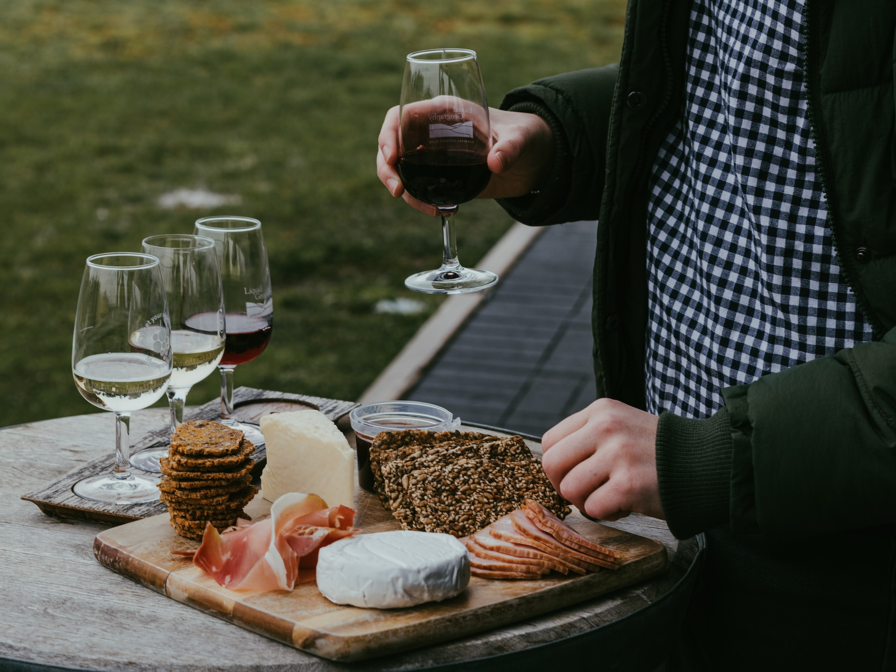

Borkostoló
Borvacsora vagy borkóstoló? Mit jelent pontosan a borvacsora és miben különbözik a kettő? Milyen
eseményekre ajánljuk a borvacsora szervezését?
A borvacsora alkalmával a vendégek számára borhoz értő szakember (sommelier) kínálja a borokat a
felszolgált ételek mellé. A borvacsora során több fogásos ételsorról beszélhetünk, amelyek mellé a hozzáillő
borkülönlegességek felszolgálásakor az ízek harmóniájára kerül a hangsúly.

A borvacsora és a borkóstoló közti külöbség, hogy míg a borvacsora alkalmával a felszolgált ételek és a
borok párosítása a lényeges szempont, addig a borkóstoló alkalmával csak és kizárólag a borok ízlelése,
önmagukban való értékelése a fontos. Asztal foglaláshoz kérjük keressen minket a weboldal alján lévő
elérhetőségeinken. Köszönjük!